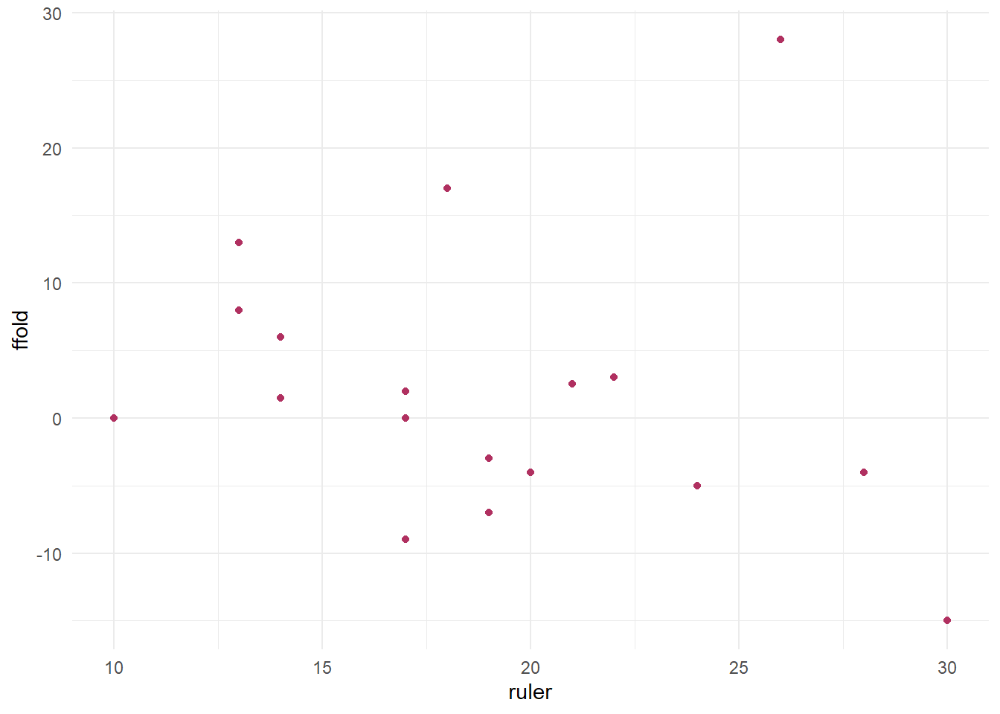

5.7 DATA VISUALISATION (TWO VARIABLES)
Now that we’ve subset the data, we can head right on to the DATA VISUALISATION
(TWO VARIABLES) page. Choose ffold as your “dependent (y) variable”. Note that:
- currently, the x variable is the first variable in the data, which should be
person. - the “Plot type” is set to “points” (scatter plot).
person is a categorical variable, but as you can see, it’s still possible to
plot a scatter plot anyway.
Question: in this plot, what does each point represent?
We’d normally use something different like a box plot to plot a continuous dependent variable against a categorical x variable. Try selecting box plot from the “Plot type” list.
Question: the box plot should just have a single horizontal line for each
person. Why is this?
5.7.1 SCATTER (POINTS) PLOTS
We’re interested, in fact, in the pballs and ffold variables. Choose
pballs as the independent (x) variable. You should end up with a graph something
like this:

Thinking about our hypothesis that better aim will mean better flexibility…
Questions: what can we say about this graph, in terms of…
- what is the trend?
- does the trend support our hypothesis?
- are there any potential outliers or points with high influence over the trend?
OK, so this is a pretty beautiful graph, I think you’ll agree.
Question: do you agree?
We can easily make this graph ourselves. Click on the CODE tab and you’ll see a short chunk of code that makes this graph. If you’re coding alongside this worksheet, copy this over and see if you can recreate the plot.
There are various bits to this code, and because code is quite literal, you can probably guess where to change things to make this plot look a little different. Here’s a relatively big task: using your educated intuition…
Task: copy this chunk of code and edit it so that:
- The y axis has limits of -20 and 30
- The points are “slategrey” colour
- The x axis has a label saying “Paper balls”
- The y axis has a label saying “Forward fold”
Now change those variables using the controls in the DATA VISUALISATION (TWO VARIABLES) page to see whether you got it right.
Hint: you don’t always have to include everything. We could exclude the
ylim(), ylab(), xlab() and theme functions, and eliminate the arguments
from the geom_point() function. We’d still get a graph, just plotted with all the
default arguments and values.
# initialise
plot <- ggplot(dataSubset, aes(x = pballs, y = ffold)) +
# plot a histogram (geom)
geom_point()
plot## Warning: Removed 1 rows containing missing values (geom_point).
Question: What do you think this warning message could mean? (Hint: look
at the data and pay attention to the role and any missing data in ffold).
We’ve made some conclusions about the link between a person’s ability to
aim paper balls at a wastepaper basket, and their ability to fold themselves in half.
Now we want to know whether someone’s reaction time influences their ability
to fold themselves in half. If you change the “independent (x) variable” to
ruler then you should get a plot something like this:

I changed the colour of the points, for a bit of a change. If you’re coding alongside reading, you don’t have to change the colour (or please feel free to pick any colour you like!)
Same Questions here:
- what is the trend?
- does the trend support our hypothesis?
- are there any potential outliers or points with high influence over the trend?
Although these are the variables we’re interested in, there are other things that might affect the dependent variable, and they’re worth checking out. Change the independent (x) variable to gender.
Question: Which grammar of graphics “layer” will this change in x variable affect?
- geometries
- data
- theme
- aesthetics
- facets
Your graph should look something like this (but with a different colour):

Points are not really a helpful way to visualise data in groups, although we can sometimes tell something from them.
Question: which gender has the larger variance in ffold?
- female
- male
5.7.2 BOX PLOTS
A more helpful way to look at these two variables is using a box plot:
plot <- ggplot(dataSubset, aes(x = gender, y = ffold)) +
geom_boxplot(color = 'goldenrod', fill = 'papayawhip') +
# some colour names are ridiculous...
ylim(-15, 28) + ylab('Forward fold') + xlab('Gender') +
theme_minimal()
plot## Warning: Removed 1 rows containing non-finite values (stat_boxplot).
Our fill argument has actually come into some use now! (There are some
points that have an outline and a fill: if you want to give it a try then try
changing the shape argument in one of the earlier plots that use
geom_point()). Some of the R colours have crazy names. You can also specify
colours using hex values
if you like.
The box plot shows us a little about the distribution of our data. If the quartiles are close to the median, then the distribution has a low variance.
Question: can a box plot also tell us something about the skewness? If so, how?
5.7.3 VIOLIN PLOTS
Box plots are one of the oldest and most commonly used methods of visualising a
continuous versus categorical variable, but ggplot2 offers up another, newer
one in the form of a “violin” plot. Choose “violin” as the plot type.
Question: take a guess at what the geom function will be to plot a violin
plot (i.e. points is geom_point(), boxplot is geom_boxplot())…
Remembering back to the density plots of last week, a violin plot is essentially a density plot for different groups. Just as with other density plots, it has its drawbacks: you can see the whole distribution, but it’s not possible to discern the moments of the distribution easily.
It does seem that there are differences between the genders in their forward-folding
abilities. Perhaps not in the mean value, but in the variance at least. We may
want to visualise three variables together: pballs or ruler as the independent
variable, ffold as the depdendent variable, and then an extra grouping of
gender. Think back to earlier plots with pballs or ruler on the x axis and
ffold on the y axis.
Question: How could this plot be changed to also show the gender groups?
5.7.4 BAR PLOTS
You may be familiar with another means of visualising categorical x continuous
data, called a “barplot” (the fourth option). Please feel free to use bar plots to
explore the data, but be aware that there are distinct disadvantages to
using bar plots, and many researchers are moving away from them nowadays. They
describe very little in terms of the data variance or skewness, because they are just
bars showing the mean for each group. Additionally, because they require the y-axis to
include 0, it can be difficult to see important effects in some data sets
where values of the y variable are large, but variance, and differences between
groups, are very small.
5.7.5 EXPERIMENTAL DESIGN, NONINDEPENDENCE AND BIAS
An important thing that we should start thinking about now is nonindependence and experimental design. In statistical analyses, each observation (data point) is usually assumed to be independent. This means that there is no way to predict any one data point from any of the other data points. NOTE: there is the concept of an independent variable (the x variable), which is different to the concept of independent data (data points not being dependent on one another). I know it’s confusing, I’m sorry, I don’t make the rules…
Nonindependent data is when we can predict any one data point from
another one. This is usually due to some way in which the data are collected,
including spatial and temporal replication. In the ‘games’ data, there is
nonindependence: each group has been tested at a different time, and/or
working together and not with any of the other groups. G1 is the guys; G2 is the ladies,
G3 is some of your lecturers with whom I share an office,
G4 is my family, and further groups are incoming. Each group shares
characteristics, may have taken a different approach to playing the games
(note that there are lots of things I didn’t tell you about how to play the games),
have different ages or different variations in ages, and were tested at different
times of the day. All of these things could affect the data: if tested late
in the day, reactions could be slower; if tested in the morning when muscles
are stiffer, people could be worse at the forward
fold than other groups tested in the evening; different groups may have
thought of different ways to do each task… What this means is that data
within each group may be likely to be more similar to one another than to
other data in other groups.
Task: plot ffold as the dependent variable and group as the independent
variable. Is there any evidence that data points within groups might
actually be similar to one another in any way?
Think also about the “experimental design” in the way the data was collected. There may be biases if one data point was collected in a slightly different way to another, when they should actually have been collected in exactly the same way.
Task: we’ll have a discussion later about nonindependence and biases in the
‘games’ data. Think and write down possible ideas about where nonindependence
and biases appear in the data.